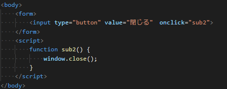

window.open()は別のウィンドウを開きます。 今回はボタンを押すと別ウィンドウを開く設定にします。
サンプルコード
inputでボタンを作ってonclickにイベント名を入れます。
scriptの中にはfunction イベント名()で｛｝の中にwindow.open()を入れます。
window.openの（）内には開きたいＵＲＬを入れて次にウィンドウ名、最後のオプションには
ウィンドウの小窓の大きさなどの様々な設定ができます
window.close()はウィンドウを閉じます
サンプルコード
inputでボタンを作ってonclickにイベント名をいれます。
scriptの中にはfunction イベント名()で｛｝の中にwindow.close()を入れます。
window.focus()はウィンドウを手前に表示できます

inputでボタンを作ってonclickにイベント名をいれます。
scriptの中にはfunction イベント名()で｛｝の中にwindow.focus()を入れます。